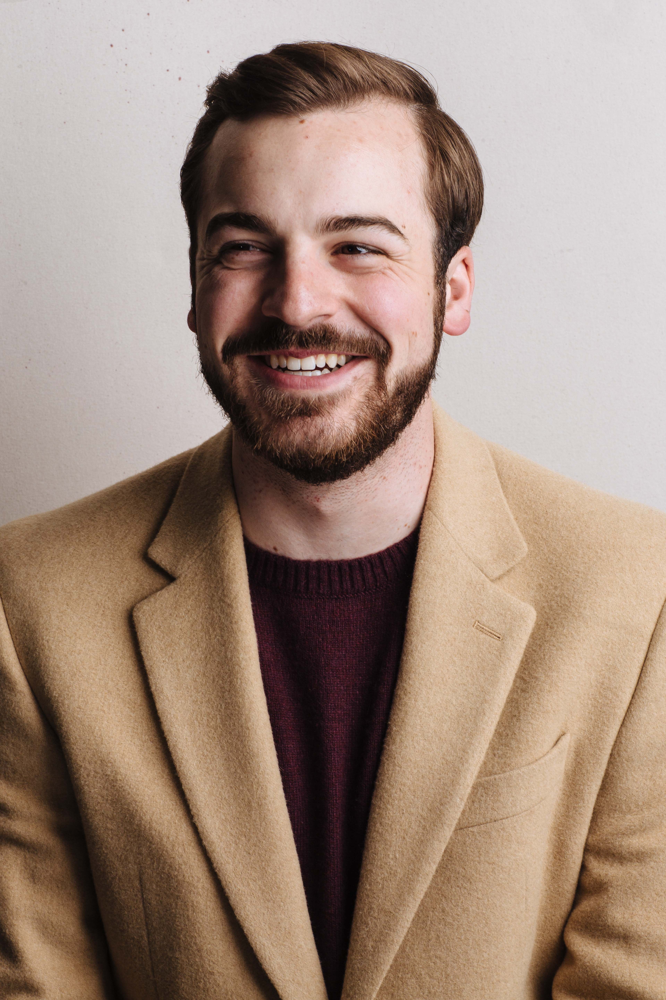
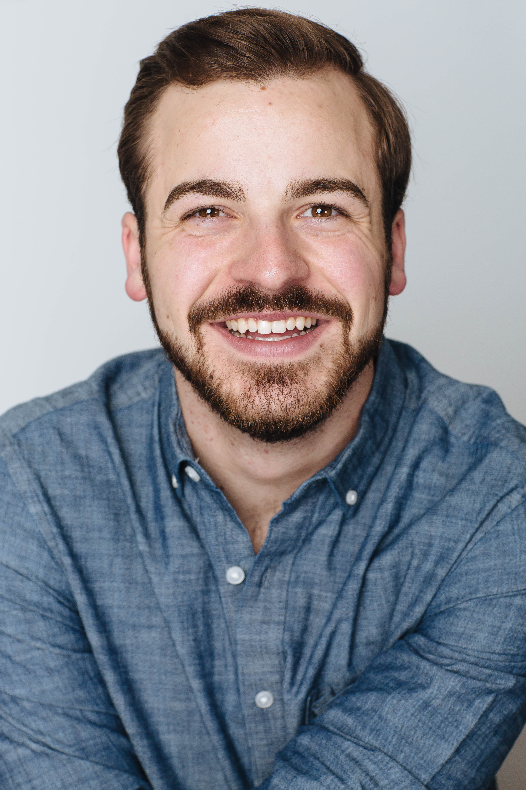

A bit about David
 David was born and raised in Tampa, FL. David has three sisters, Abigail, Emma and Noa who all, like him, started in theatre at a very young age. David grew up with the peacocks at Independent Day School: Corbett Campus (now Corbett Prep) where he was first bitten with the theater bug, playing Narrator #7 in Mrs. B's production of The Cool Cats Go Down the Nile (OFGC) ((Original First Grade Cast)). David went on to attend Howard W. Blake School of the Arts where, under the direction of Sean Ryan Paris and Seth Travaglino, he was seen in The Tempest, Parade, Bat Boy and many other productions. During his time at Blake, David was a proud member of Florida State Thespians Troupe 5742, where earned several superiors for his participation in multiple Individual Events, as well as having the honor of being District 9 District Representative performing at Opening Ceremonies in 2012, a scene from The Complete Works of William Shakespeare (Abridged) . In addition to Theatre, David is a Trombonist, Pianist and an Eagle Scout (with Bronze, Gold and Silver Palms).
David is a proud Penn Stater, graduating with a BFA in Musical Theatre and a Minor in History in 2019, under the Direction of John Simpkins. While at Penn State, David’s favorite shows include: Marvin in Falsettoland; Black Stache in Peter and the Starcatcher; The Warden in Kiss of the Spiderwoman; Archibald inThe Secret Garden (Dir. Susan H. Schulman), Judge Taylor in To Kill a Mockingbird (Dir. Susan H Schulman); and Jonah in Bad Jews. David was also lucky enough to participate in Penn State’s New Works initiative where he originated the role of the loathsome yet ridiculous King Ambrose/ Ferryman in Kirsten Childs’ new musical The Lucky Boy. During his time at Penn State David also was a part of “The Halftime Show of the Century” with the Penn State Blue Band and the entire Penn State department of Musical Theatre, performing at the 2018 Football White Out game against Ohio State.
David has worked regionally at many theaters across the country some of his favorite regionally include Sir. Galahad in Spamalot (Millbrook Playhouse), Cornelius in Hello, Dolly! (Texas Family Musicals) and Reuven Malter in The Chosen (American Stage Theatre Co.). David, most recently was in the workshop/ New York Debut ofHarmony: A New Musical written by Barry Manilow and Bruce Sussman and directed by Warren Carlyle.
David is represented by Avalon Artists Group (New York Legit). Proud member of Actors Equity Association (AEA).